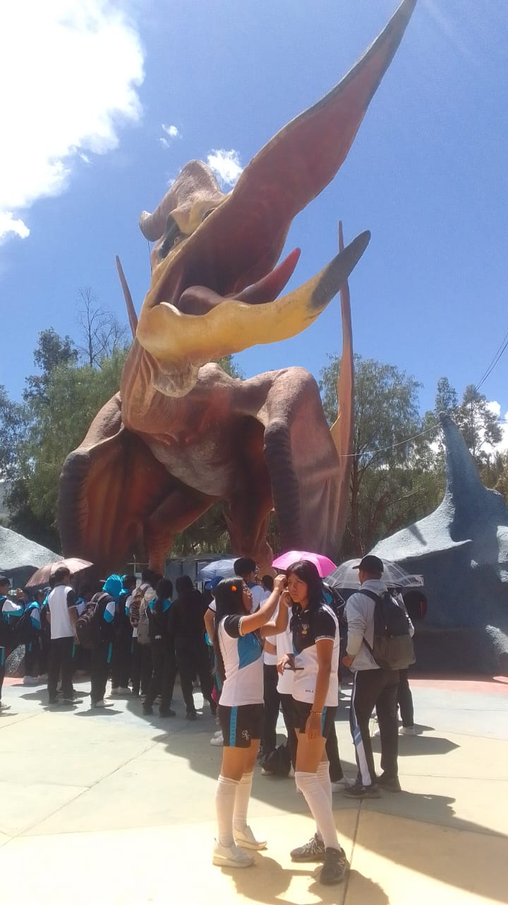
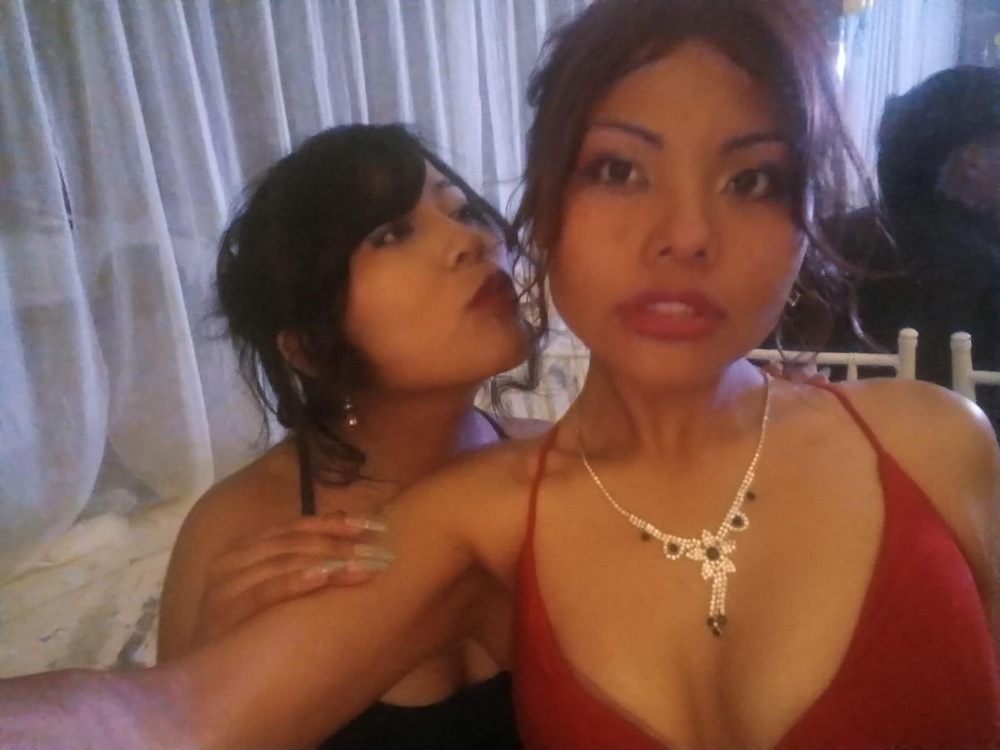
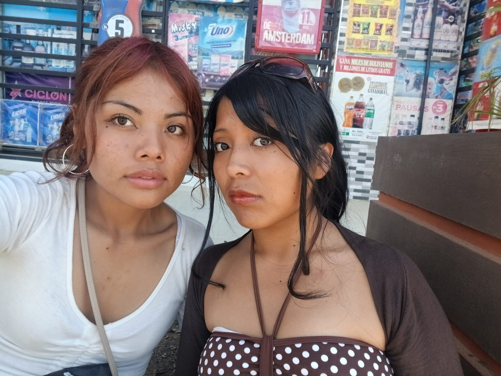
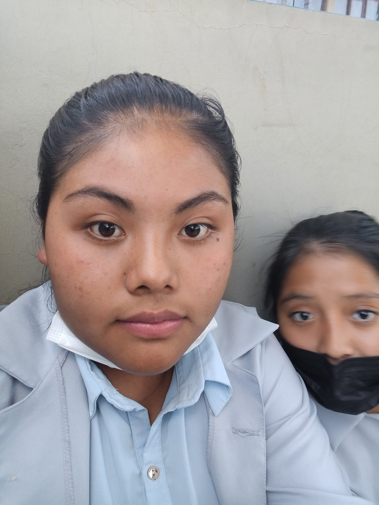
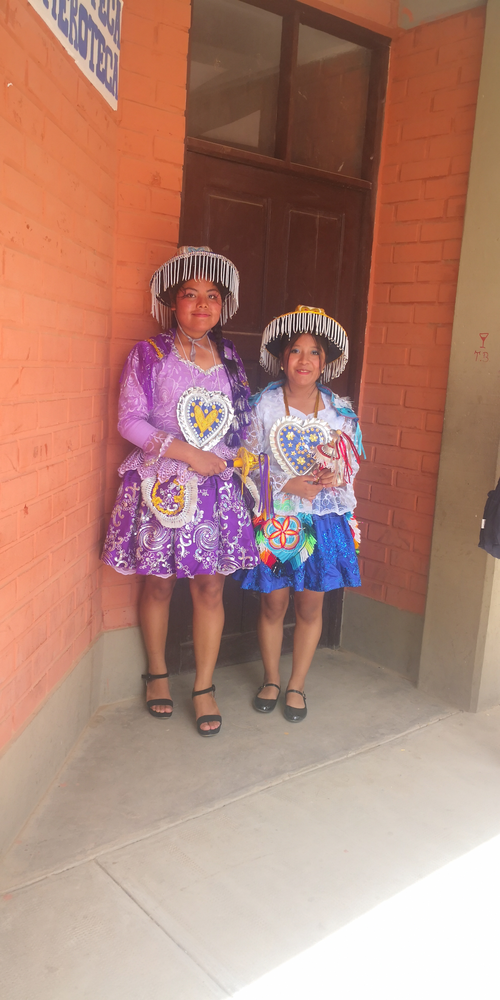
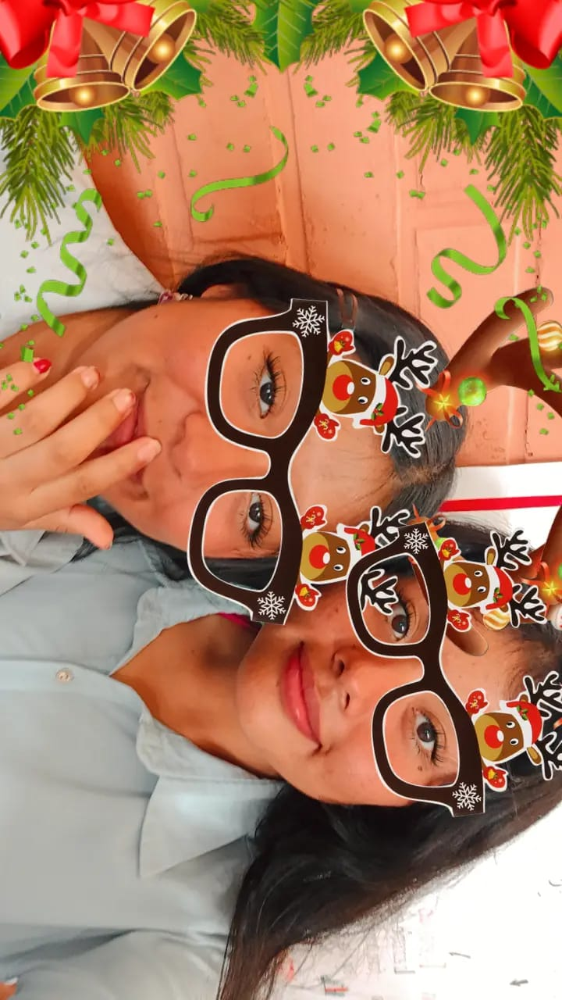
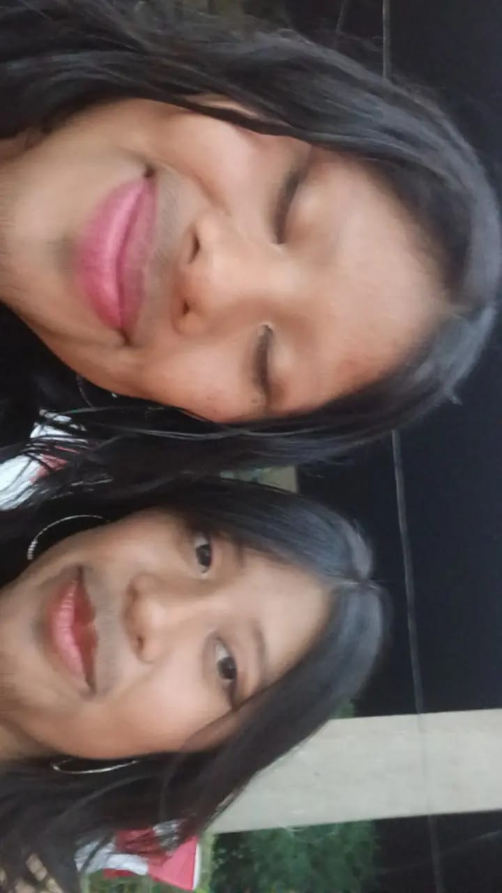

Nuestro amistad
tu amistad es lo que mas quiero y el mayor regalo que me das y espero que esta bella amistad sola vaya creciendo hasta que la vida decida separarnos con la muerte proque yo no seria capaz de dejarte ir en vida

Momentos
Recuerdo todos los momentos que comparti contigo tanto buenos como malos pero mas los buenos la vez que nos burlamos del wilder o en la que lloramos en video llamada y son esos momentos los cuales hacen que te amo cada vez mas, te amo a ti, a tu personalidad, tus gustos, tus expresiones, amo como eres, como te esfuerzas y sobre todo amo todo tu ser y todo lo que complementas en mi

Todo lo que amo de ti
Lo que siento por ti es mas que un simple querer yo te amo, te amo tanto como si fueras mi propia hermana, te amo por lo que eres, por tu sinceridad, por tu humor, por ti manera tan inusual de consolarme, por tods las veces que me apoyas, por tu sonrisa, tu esfuerzo, en total si tengo que mencionar todo lo que amo de ti no acabaria pronto porque lo que amo de ti es demasiado y tambien es porque soy medio lenta pero aun asi con todos mis defectos te amo y espero que todo tu maravilloso ser me ame tambien

Despedida
sabes para terminar esta carta quiero recordar nuestro ultimo año de colegio el año en el que mas te ame, donde mi amor por ti se incremento de una manera sorprendente, el pensar de perderte, de perder contacto contigo o que dejaramos de hablar me destrozaba pero ahora eso es solo un mal recuerdo porque nuestra amistad fue mas fuerte que la separacion y la distancia y que a pesar de todo sepas que yo estoy para ti apoyandote y confiando en todo tu esfuerzo te amo bro

Dias dificiles
sabes esos dias en el colegio donde te hice sentir mal y tu aun a pesar de todo fuiste capas de perdonarme y volver a iniciar nuestra amistad te lo agradesco eres tan gentil que has podido perdonar cada uno de mis errores

A tu lado
sabes antes a mi me daba panico bailar y tu lograste que yo pudiera ser feliz y poder acoplarme a un curso donde yo me sentia tan fuera de lugar tu eres con quien me siento segura en el lugar donde te encuentres o al lugar que vayas quiero estar a tu lado para compartir tu felicidad, tus miedos y tus angustias

Fotos
te quiero decir que cada foto que sacas a pesar de mi negativa siempre es un lindo recuerdo que captura nuestros sentimientos, los momentos feliced y los tristes pero los momentos a tu lado no importa que siempre son especiales

Nuestra primera fiesta
guardo ese recuerdo con ganta felicidad porque fue ese momento la vez que senti que eramos tan compatibles donde nos sentimos incomodas caundo los señores se sentaron a nuestro lado y como nos comimos todos los bocaditos, me recuerda las veces que fuimos nosotras mismas sin importat quien mirara
